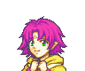

Support Rank C

・・・ジーーーッ...Staaare.

？ ・・・私に何か
ご用でしょうか？? ...Do you need something from me?
！
んっと・・・それ！! Um... that!
ポロンポロンって
音 きれいなの なに？That plink-plonk sound, it's so pretty, what is it?
これは ハープという楽器です
お気に召しましたか？This is an instrument called a harp. Do you like it?
うん ファね
それ すっごく 好きYeah! Fae really, really likes it!
それからね えーっと えーっと・・・
名前なに？And also, um, um... what's your name?
私ですか？Mine?
私はエルフィンといいます
かわいいお嬢さんI'm called Elffin, little lady.
えるひ・・・ん？Erufi...huh?
エルフィンですよElffin.
えるふぃん！Erufin!
そうですThat's right.
えっとね ファね エルフィンも好き！
かみね 風でふわふわって それでUm, Fae likes Elffin too! Your hair goes all fluffy in the wind, and then
お日さまが当たると きらきらするの！！
ファ きれいなの とっても好き！when the sun hits it, it sparkles!! Fae thinks it's pretty, really really likes it!
フフフ それは光栄ですね
ありがとうございますHeh heh, that's quite an honor. Thank you.
また きてもいい？Can I come again?
ええ いつでも
大歓迎ですよYes, you're always welcome.
Support Rank B
エルフィン！Elffin!
この間の かわいいお嬢さんですね
こんにちはAh, the little lady from the other day. Hello.
・・・ファの名前は
『かわいいおじょうさん』じゃないよ...Fae's name isn't "little lady."
これは失礼しました
ファさん・・・とお呼びして良いですか？My apologies. May I call you Miss Fae, then?
『ふぁさん』じゃないの
ファなのNot "Miss Fae." Just Fae.
フフフ・・・
わかりました では ファHeh heh... Understood. Then, Fae—
・・・不思議なひびきの名前ですね
まことの名ですか？...It's a curiously-sounding name. Is it your true name?
うーんとね 本当はね
もっとながーい名前なのUm, well, actually it's a much lo~nger name.
でも 人間には聞こえない音なんだって
だから聞こえるところだけとってファなのBut apparently it has sounds humans can't hear, so I just took the part you can hear, and that's Fae.
そうですか・・・I see...
でもエルフィンは
聞こえるかもしれないよBut maybe Elffin could hear it.
だって とーっても
きれいな音 たっくさん つくるもの'Cause you make soo many really pretty sounds.
では いつか
ためしてみましょうかWell then, perhaps I'll try it sometime.
うん！Okay!
Support Rank A
ねぇねぇ エルフィンHey, hey, Elffin.
はい ファ なんですか？Yes, Fae? What is it?
ファはね ずーっと
エルフィンに聞きたいことがあったのFae's had something she's wanted to ask Elffin for a loong time.
なんでしょう？
私に答えられることなら良いのですがWhat is it? I hope it's something I can answer.
あのね エルフィンは・・・
お姉ちゃん？ お兄ちゃん？Um, is Elffin... a big sister? Or a big brother?
・・・どっちだと思います？...Which do you think?
えっとね 最初はね
お姉ちゃんだと思ったのUm, well, at first Fae thought big sister.
とってもきれいで いい匂いがするから
でもね この間 ロイのお兄ちゃんがBecause you're so pretty and smell nice. But then, the other day, Roy's big brother
エルフィンは男の人だから
お兄ちゃんだって言うの ホント？said Elffin's a man, so it's big brother. Is that true?
そう 私は『お兄ちゃん』ですね
・・・がっかりしましたか？That's right, I suppose I am a "big brother"... Are you disappointed?
ううん そっか
お兄ちゃんなんだ・・・エヘヘNuh-uh. I see, so you're a big brother... hehe.
？ どうしました？? What's the matter?
あのね えっとね！
ファもね エルフィンに負けないくらいUm, well! Fae's gonna be, like, just as pretty as Elffin someday,
きれいになるから！ おっきくなるまで
待っててね！！ 約束だよ！really pretty! So wait until I'm all grown up!! It's a promise!
あ ファ！ 待ってください
・・・ファが大人になる頃にはAh, Fae! Please wait... by the time Fae grows up,
私は この世にいないと思うのですが
フフ まあ 今はいいでしょうI don't think I'll be in this world anymore. Heh. Well, never mind that for now.